Race screen — 2026-11-11 · updated 16:38
M2 P&L −£10.001 won, 5 lost · 5 not backed (price outside 3.5–8)
£2 per M2 priced 3.5–8 at the off (BSP; SP until BSP comes in next morning) · loser −£2 · winner £2 × (BSP − 1) less 5% commission · 1 winner not yet counted — BSP comes in tomorrow morning
Order: each race is in market order (shortest forecast price first). A gold
◆ 1/2/3 marks your data model's top 3 — a gold pick at a
longer price is where your data disagrees with the market (a value spot for your eye).
Badges by the name: M2 Market #2 — 2nd favourite in the morning forecast, qualifying race; back only if the live price is 3.5–8.0 ★ EYE finished last run strongly (+score) ⚠ hard trk easy→hard track step-up (−score) ▼ easy trk recently placed at much tougher track (+score) ⚠ draw badly drawn here (−score) ⚠ pace run-style fights the course pace bias (−score) ⚠ ground has tried this going but never placed on it (−score) ▼ cls dropping in class today (+score) ▲ cls rising in class today (−score) ▼ in money in vs opening show ▲ drift drifting vs opening show ⚠ 2 runs / IRE form too little / foreign form to read.
OR column: ↑ green arrow = BHA rating rising (improving horse); ↓ orange = rating falling. TF column: Timeform stars 1–5 (★★★★★ = top rated).
Suit column: going✓ / trip✓ / trk✓ (track toughness) / draw✓ (well drawn).
Rest: green Crse = won there; yellow comment = trouble in running; greyed = novice/bumper or non-handicap 5–6f sprint (left out of the tally — handicap sprints now shown at full opacity). Res fills in after racing (winner green; ✓ = winner came from the top-3 market rows, ◆ = one of your gold data picks won); Spd is a rough home figure; BSP fills in the next morning.
Badges by the name: M2 Market #2 — 2nd favourite in the morning forecast, qualifying race; back only if the live price is 3.5–8.0 ★ EYE finished last run strongly (+score) ⚠ hard trk easy→hard track step-up (−score) ▼ easy trk recently placed at much tougher track (+score) ⚠ draw badly drawn here (−score) ⚠ pace run-style fights the course pace bias (−score) ⚠ ground has tried this going but never placed on it (−score) ▼ cls dropping in class today (+score) ▲ cls rising in class today (−score) ▼ in money in vs opening show ▲ drift drifting vs opening show ⚠ 2 runs / IRE form too little / foreign form to read.
OR column: ↑ green arrow = BHA rating rising (improving horse); ↓ orange = rating falling. TF column: Timeform stars 1–5 (★★★★★ = top rated).
Suit column: going✓ / trip✓ / trk✓ (track toughness) / draw✓ (well drawn).
Rest: green Crse = won there; yellow comment = trouble in running; greyed = novice/bumper or non-handicap 5–6f sprint (left out of the tally — handicap sprints now shown at full opacity). Res fills in after racing (winner green; ✓ = winner came from the top-3 market rows, ◆ = one of your gold data picks won); Spd is a rough home figure; BSP fills in the next morning.
Winner in the market top 3: 8/11 (73%) · in your gold data top 3: 8/11 (73%) — greyed novice / sprint races excluded
| Res | Horse | Price | BSP | Dr | Form | Crse | Suit | OR | Spd | TF | Last comment |
|---|---|---|---|---|---|---|---|---|---|---|---|
| 1 | Seraphic ◆ 1 ★ EYE | 2.62 | - | 6-1-5-3-1-1 | 1r 1p | going✓ trip✓ trk✓ | 102 ↑ | 64 | ★★★★★ | Held up towards rear, closed on leaders 3 out, short of room bepfre 2 out, switched left a | |
| 0 | 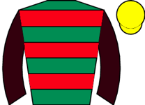 Mariole M2 ▲ cls | 4.50 | - | 2-12-3-6-1-5 | going✓ trk✓ | 103 | 53 | ★★★★☆ | Midfield, chased leaders from 2 out, kept on after last, weakened towards finish | ||
| 2 |  Mister Des Places ◆ 2 Mister Des Places ◆ 2 | 5.00 | - | 1-----2-3-3 | 107 | 40 | ★★★☆☆ | Wore hood to post, midfield, headway to track leader before 5th, outpaced before 3 out, so | |||
| 4 | 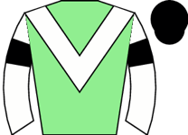 Henrysbrotherjack | 6.00 | - | 13-1-5-1-1-9 | trk✓ | 103 ↑ | 55 | ★★★☆☆ | Held up in rear, not fluent 4th, ridden and weakened from 3 out | ||
| 3 | 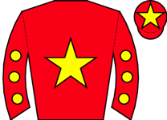 Douglas Dc ◆ 3 ▲ cls | 7.00 | - | 5-5-2-4-4-- | trk✓ | 102 ↑ | 75 | ★★★☆☆ | Towards rear, closed on leaders after 4 out, still making headway when fell 3 out |
⚠ limited form — likely skip
| Res | Horse | Price | BSP | Dr | Form | Crse | Suit | OR | Spd | TF | Last comment |
|---|---|---|---|---|---|---|---|---|---|---|---|
| 0 |  Largy Force ◆ 2 Largy Force ◆ 2 | 2.62 | - | 2-1-2-1-2-1 | 1r 1p | trk✓ | 127 ↑ | 47 | ★★★★★ | Midfield, went third 3 out, pushed along after 2 out, led before last, drew clear run-in, | |
| 0 | 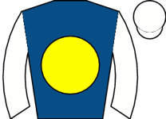 Dylans Moon ◆ 3 | 4.00 | - | 3-- | trk✓ | 81 | In touch with leaders, ridden when not fluent and fell 3 out | ||||
| 0 | 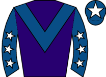 Arcturus Flame ◆ 1 | 4.50 | - | 2-5-2-5-1-5 | going✓ trk✓ | 76 | ★★☆☆☆ | Wore red hood to post, prominent, pushed along after 2 out, weakened before last | |||
| 1 |  Kefir D'oudairies ▼ cls Kefir D'oudairies ▼ cls | 5.00 | - | 2-1-5-2-4-4 | going✓ trip✓ trk✓ | 110 | 59 | ★★★★☆ | Wore red hood to post, midfield, asked for effort after 2 out, briefly went third before l | ||
| 2 | Orchard County | 21.00 | - | 11 | 40 | Ran in snatches, led but pestered, headed 4th, in touch with leaders 3 out, weakened befor |
⚠ limited form — likely skip
| Res | Horse | Price | BSP | Dr | Form | Crse | Suit | OR | Spd | TF | Last comment |
|---|---|---|---|---|---|---|---|---|---|---|---|
| 4 | 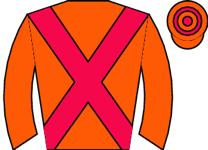 Crystal Days ◆ 1 | 1.91 | - | 3-4-2---2-1 | 1r 1W | going✓ trip✓ trk✓ | 109 | 71 | ★★★☆☆ | Made all, pushed along and two length clear approaching 2 out, kept on approaching last | |
| 1 | 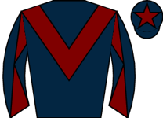 Fresh Perspective ◆ 2 ▼ cls | 4.50 | - | 11-1-1-3-5-9 | trip✓ trk✓ | 120 | 56 | ★★★★☆ | Mounted in chute, wore hood to post, close up, led before 3rd, headed before 4th, not flue | ||
| 2 |  Soldier's Leap ◆ 3 Soldier's Leap ◆ 3 | 5.00 | - | 1-1-5-5-2-2 | trip✓ trk✓ | 106 ↑ | 63 | ★★★☆☆ | Held up in mid-division, shaken up 3 out, led 2 out, headed and lost second before last, s | ||
| 3 |  Adonedeal Adonedeal | 7.00 | - | 1-1-6-10-- | trip✓ trk✓ | 116 | 58 | ★★★★★ | Wore hood to post, keen in rear, well behind approaching 5th, tailed off 3 out, pulled up |
| Res | Horse | Price | BSP | Dr | Form | Crse | Suit | OR | Spd | TF | Last comment |
|---|---|---|---|---|---|---|---|---|---|---|---|
| 3 |  Broadway Honey ◆ 1 ★ EYE ▼ cls Broadway Honey ◆ 1 ★ EYE ▼ cls | 1.83 | - | 5-1-3-1-1-1 | 1r | going✓ trip✓ | 105 ↑ | 74 | ★★★★★ | Led, headed 3rd, chased leader, contested lead 11th, chased leader 4 out, ridden to lead n | |
| 2 | 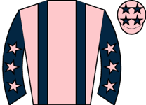 Ignore The Door ◆ 3 M2 ★ EYE | 4.00 | - | 1-6-3-5-2 | going✓ trk✓ | 108 | 53 | ★★★★☆ | Led, not fluent 1st, went three lengths clear after 5th, reduced lead 8th, headed before 9 | ||
| 1 | 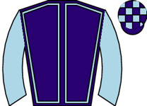 Yes Day ◆ 2 | 5.00 | - | 2-3-2-4-1-3 | going✓ trip✓ trk✓ | 111 | 56 | ★★★☆☆ | Prominent early, led but pestered after 1st, a length ahead 3 out, headed 2 out, soon ridd | ||
| 4 | 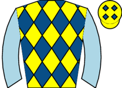 Jupiter Des Bordes ▼ cls | 11.00 | - | 2-10-5-5-9-7 | 1r | 108 ↓ | 73 | ★★☆☆☆ | Never better than mid-division, outpaced and well beaten 3 out |
| Res | Horse | Price | BSP | Dr | Form | Crse | Suit | OR | Spd | TF | Last comment |
|---|---|---|---|---|---|---|---|---|---|---|---|
| 2 | 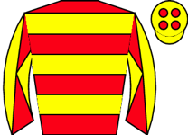 Paddy De Pole ◆ 3 | 3.00 | - | --1-4-2-4-1 | going✓ | 117 | 59 | ★★★★★ | Chased leader, not fluent 9th, briefly ridden, in touch with leader 3 out, ridden to dispu | ||
| 1 |  Jackstell ◆ 1 M2 ★ EYE Jackstell ◆ 1 M2 ★ EYE | 4.00 | - | 1-5-6---1-3 | trk✓ | 117 | 71 | ★★★★☆ | Soon raced in third, pushed along after 8th, outpaced by leading pair after 2 out, not flu | ||
| 5 |  Oakley ◆ 2 ▼ cls Oakley ◆ 2 ▼ cls | 4.50 | - | 4-1-2-3-1-5 | going✓ trk✓ | 117 ↑ | 70 | ★★★☆☆ | Towards rear, mistake 2 out, stayed on run-in, never a danger | ||
| 4 | 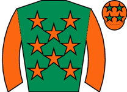 Secret Trix ★ EYE | 7.00 | - | 3-3-2-2-4-4 | going✓ trk✓ | 116 | 56 | ★★☆☆☆ | Wore hood to start, led, bumped 1st, headed 2nd, prominent, outpaced 4 out, soon dropped t | ||
| 3 | I'm A Starman | 9.00 | - | 4-5-2---2-4 | 1r | going✓ | 105 | 62 | ★★★☆☆ | Soon raced in second, pushed along before 3 out, lost position and dropped to last before | |
| 0 | 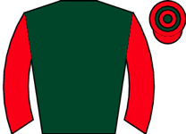 Jaytee ⚠ ground | 15.00 | - | 1-5-11-3-6-8 | trk✓ | 105 ↓ | 48 | ★★☆☆☆ | Prominent, lost position after 8th, ridden and in touch 3 out, soon weakened |
| Res | Horse | Price | BSP | Dr | Form | Crse | Suit | OR | Spd | TF | Last comment |
|---|---|---|---|---|---|---|---|---|---|---|---|
| 4 |  Mary ◆ 1 ▼ cls Mary ◆ 1 ▼ cls | 2.62 | - | 5-2---3-3-3 | trk✓ | 100 ↓ | 70 | ★★★☆☆ | Wore red hood to post, led, not fluent 1st, untidy 4th, mistake 2 out and pushed along, so | ||
| 0 | 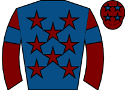 Alba Crus M2 | 3.50 | - | 1-7-3-4-9-- | trk✓ | 98 | 66 | ★★★★☆ | In rear, headway 5 out, mistake and unseated rider 2 out | ||
| 2 | 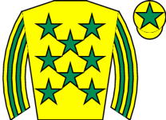 Tropical Talent ◆ 2 ▲ cls | 5.00 | - | 5-2-4-2-3-8 | going✓ trip✓ trk✓ | 79 ↓ | 81 | ★★★★★ | Chased leaders, pushed along 2f out, short of room well over 1f out, no impression 1f out, | ||
| 1 | 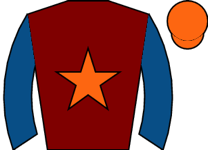 Midnight View ◆ 3 | 9.00 | - | 9-1-3-5-4-7 | 2r 1W | going✓ trk✓ | 87 | 61 | ★★☆☆☆ | Chased leaders, mistake 7th, mid-division, weakened before 3 out | |
| 5 | River Don ▼ cls | 11.00 | - | 4-4-4 | 75 | 41 | ★★★☆☆ | Off the pace in mid-division, not always fluent, remote fourth from 3 out, tailed off | |||
| 3 | 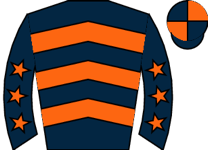 Boom Boom | 17.00 | - | ------3-2-8 | 1r | going✓ trip✓ | 79 ↓ | 58 | ★★☆☆☆ | Always towards rear |
⚠ limited form — likely skip
| Res | Horse | Price | BSP | Dr | Form | Crse | Suit | OR | Spd | TF | Last comment |
|---|---|---|---|---|---|---|---|---|---|---|---|
| 2 | 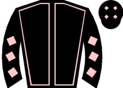 Katies Turn ◆ 2 | 2.20 | - | unraced | - | ||||||
| 1 | 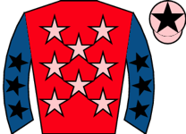 Sunshine Sheila | 3.00 | - | unraced | - | ||||||
| 6 | 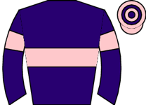 Star Of Joy | 9.00 | - | unraced | - | ||||||
| 3 | 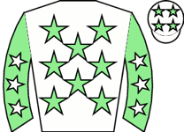 Nervousdisposition | 13.00 | - | unraced | - | ||||||
| 7 | Poppy's Mist | 15.00 | - | unraced | - | ||||||
| 5 | Lady Inca ◆ 3 | 17.00 | - | unraced | - | ||||||
| 4 | 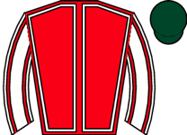 Maria's Double ◆ 1 | 21.00 | - | 7 | 40 | Chased leaders on outside, weakened over 3f out |
| Res | Horse | Price | BSP | Dr | Form | Crse | Suit | OR | Spd | TF | Last comment |
|---|---|---|---|---|---|---|---|---|---|---|---|
| 4 | 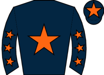 Chuggy ◆ 1 | 2.88 | - | 5-1-1-1-2-5 | 1r | going✓ trip✓ trk✓ | 125 ↑ | 89 | ★★★★★ | Led, headed and remained prominent after 2nd, led 6th, jumped left 9th, headed 4 out, ridd | |
| 3 |  Laguna Beach ◆ 2 M2 ▼ cls Laguna Beach ◆ 2 M2 ▼ cls | 3.25 | - | 5-3-1-2---7 | trk✓ | 126 | 65 | ★★★★☆ | Towards rear, midfield after 2nd, chased leaders 6th, weakened quickly before 3 out, soon | ||
| 1 |  Wandering Ego Wandering Ego | 4.33 | - | 4-3-2-1-10-4 | going✓ trk✓ | 121 | 59 | ★★★★☆ | Held up in rear, ridden and outpaced before 3 out, kept on run-in, no danger | ||
| 2 | 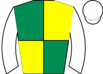 Bowenspark ◆ 3 ▲ cls | 7.00 | - | --2-5-1-5-4 | 2r 1W | trip✓ trk✓ | 119 | 69 | ★★★☆☆ | Held up in rear, ridden and headway before 4 out, soon outpaced, minor headway approaching | |
| 5 | Supreme George ▲ cls | 13.00 | - | 3-2-1-5-5-2 | 1r | going✓ | 112 | 71 | ★★★☆☆ | Wore hood to post, led, raced keenly and set strong pace, soon went clear with three other |
⚠ limited form — likely skip
| Res | Horse | Price | BSP | Dr | Form | Crse | Suit | OR | Spd | TF | Last comment |
|---|---|---|---|---|---|---|---|---|---|---|---|
| 7 | 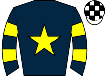 Jubilee Alpha ◆ 2 | 3.50 | - | 1-2-5-2-2-- | going✓ trk✓ | 137 ↑ | 90 | ★★★★☆ | Prominent, weakening when short of room on bend after 2 out, pulled up before last, vet re | ||
| 6 |  Sunset Marquesa ◆ 3 Sunset Marquesa ◆ 3 | 5.00 | - | 3-1-4-3---2 | trk✓ | 129 ↑ | 78 | ★★★★☆ | Chased leaders, headway to press leaders before 2 out, ridden to challenge approaching las | ||
| 5 | 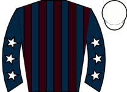 Siog Geal ▲ cls | 5.50 | - | 2-1-3-2-5-2 | trk✓ | 127 ↑ | 64 | ★★★☆☆ | Midfield, headway to go third after 4 out, second 3 out, took second before 2 out, every c | ||
| 4 | 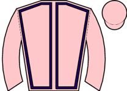 Piper Park | 7.00 | - | 3-6-2-6 | trk✓ | 128 | 68 | ★★★☆☆ | Wore hood to post, held up in touch, asked for effort after 3 out, bad mistake when held 2 | ||
| 3 | Mighty Fleur ◆ 1 ★ EYE ▲ cls | 8.00 | - | 7-2-1-1-1-1 | going✓ trip✓ | 124 ↑ | 63 | ★★★★★ | Led, headed after 1st, led next, not fluent 6th, clear 3 out, stayed on well, comfortably | ||
| 2 | 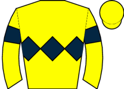 Onefournine ★ EYE ▲ cls | 9.00 | - | 2-2-10-1-1 | trip✓ trk✓ | 120 | 45 | ★★★☆☆ | Led, headed 2nd, lost position and ridden before 3 out, headway to press leader 2 out, led | ||
| 1 | 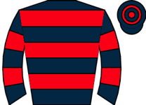 Getawhisky ▲ cls | 11.00 | - | 4---1-4-5-2 | going✓ trk✓ | 119 | 60 | ★★★☆☆ | Raced in second throughout, went left 2nd, not fluent 5th, went left again 9th, outpaced b | ||
| 8 |  Merely A Detail ▲ cls Merely A Detail ▲ cls | 34.00 | - | 3-4-1-1-3-4 | going✓ trip✓ | 114 ↑ | 80 | ★★☆☆☆ | In rear, dived at 6th, closed from 9th, lost place before 3 out, effort on outside when mi |
| Res | Horse | Price | BSP | Dr | Form | Crse | Suit | OR | Spd | TF | Last comment |
|---|---|---|---|---|---|---|---|---|---|---|---|
| 2 |  Broomfields Cave ◆ 2 ▲ cls Broomfields Cave ◆ 2 ▲ cls | 2.62 | - | 1-3-1---1-3 | going✓ trk✓ | 123 ↑ | 88 | ★★★★☆ | Chased leaders, pushed along after 4 out, ridden after 3 out, ran on but not pace to chall | ||
| 3 |  Jupiter Allen M2 ▲ cls Jupiter Allen M2 ▲ cls | 3.00 | - | 4-2-3-1---12 | 124 | 52 | ★★★☆☆ | Always behind | |||
| 4 | 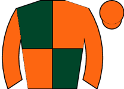 Blenkinsop ▲ cls | 5.00 | - | 12-3-18-5-1-6 | trip✓ | 124 | 58 | ★★★☆☆ | Held up in rear, smooth progress after 2 out, ridden in home straight, soon held | ||
| 0 | 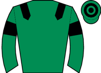 Arizona Cardinal ◆ 3 | 9.00 | - | 1-1-1---8-10 | trip✓ trk✓ | 132 ↑ | 76 | ★★★★☆ | Held up in rear, struggling 5 out, never a danger | ||
| 1 |  First Confession ◆ 1 First Confession ◆ 1 | 11.00 | - | 3-3-5---1-10 | trk✓ | 131 ↑ | 70 | ★★★★★ | In touch with leaders, pecked 5th, mistake 4 out, ridden 3 out, weakened before 2 out, wel |
⚠ limited form — likely skip
| Res | Horse | Price | BSP | Dr | Form | Crse | Suit | OR | Spd | TF | Last comment |
|---|---|---|---|---|---|---|---|---|---|---|---|
| 7 |  Agafay ◆ 1 Agafay ◆ 1 | 3.50 | - | unraced | - | ||||||
| 3 |  Fika ◆ 3 Fika ◆ 3 | 3.75 | - | unraced | - | ||||||
| 1 |  Rockson Piel Rockson Piel | 4.33 | - | unraced | - | ||||||
| 4 |  Notre Jacques Notre Jacques | 8.50 | - | unraced | - | ||||||
| 6 | 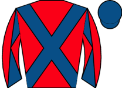 Royal Castle | 11.00 | - | unraced | - | ||||||
| 2 | 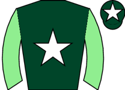 Bump And Run ◆ 2 | 13.00 | - | unraced | - | ||||||
| 5 | 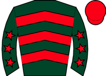 Sam's Reflection | 13.00 | - | unraced | - |
⚠ limited form — likely skip
| Res | Horse | Price | BSP | Dr | Form | Crse | Suit | OR | Spd | TF | Last comment |
|---|---|---|---|---|---|---|---|---|---|---|---|
| 2 | 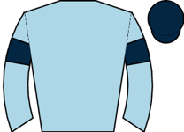 Alcarath ◆ 1 ▼ cls | 2.25 | - | 4-5-4-2-2-13 | going✓ | 97 | ★★★★★ | Raced far side, front rank, pushed along over 2f out, outpaced when ridden over 1f out, sw | |||
| 4 |  Frost Moon Frost Moon | 4.50 | - | 8-4-3 | 54 | ★★★★☆ | Raced in third, jumped left 5th, ridden before 3 out, no impression on leaders last, plugg | ||||
| 1 | 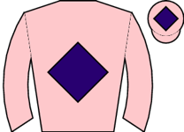 Hang Out | 5.00 | - | unraced | - | ||||||
| 3 | 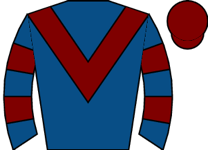 Sky Grove ◆ 2 | 8.00 | - | 3-1-5 | going✓ | 60 | ★★★☆☆ | Held up in touch, not fluent 5th, pushed along before 3 out, weakened before 2 out | |||
| 0 | 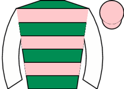 Sears Crossing ◆ 3 | 11.00 | - | 3-2-2-6-2-6 | going✓ trip✓ | 47 | ★★★★☆ | Wore hood to post, towards rear, some headway 2 out, outpaced before last, weakened run-in | |||
| 6 |  Dolly Drama ⚠ ground Dolly Drama ⚠ ground | 21.00 | - | 3-4-4-12 | trk✓ | 65 | ★★★☆☆ | Front mid-division, disputed third after 4 out, dropped away rapidly 3 out | |||
| 5 | 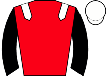 Get Busy Jumping ▼ cls | 26.00 | - | 8 | 1r | 50 | Held up in mid-division, jumped slowly 5th, well beaten from 3 out, mistake 2 out | ||||
| 7 | 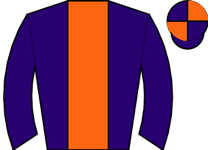 Whiteoak Duffy | 101.00 | - | 10-8-9 | 1r | 47 | ★☆☆☆☆ | In rear, not fluent 2nd, some headway when mistake 3 out, pressed briefly for remote fourt |
⚠ limited form — likely skip
| Res | Horse | Price | BSP | Dr | Form | Crse | Suit | OR | Spd | TF | Last comment |
|---|---|---|---|---|---|---|---|---|---|---|---|
| 2 |  Solid Performer ◆ 2 Solid Performer ◆ 2 | 1.91 | - | 3-3-2---4 | trk✓ | 116 ↑ | 66 | ★★★★★ | Led, ridden and headed 3 out, weakened quickly before 2 out | ||
| 1 |  Mr Rafiki ◆ 1 Mr Rafiki ◆ 1 | 3.00 | - | 4-2-----2-2 | trip✓ trk✓ | 107 | 68 | ★★★★☆ | Mid-division, not fluent 1st, headway before 2 out, went third last, kept on flat, went se | ||
| 0 | 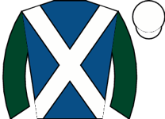 Ar Ais Aris ◆ 3 | 3.50 | - | 4-2 | 47 | Led, jumped left 6th, pressed for lead 2 out, ridden and headed approaching last where lef | |||||
| 3 |  Captain Connor ▲ cls Captain Connor ▲ cls | 8.50 | - | 3-4-2-3-5-2 | going✓ trip✓ | 85 | 46 | ★★☆☆☆ | Towards rear, headway going well after 3 out, ridden to chase winner after 2 out, every ch | ||
| 0 |  Granny B ⚠ ground ▲ cls Granny B ⚠ ground ▲ cls | 9.00 | - | 7-7-6-3-5-- | 77 ↑ | 56 | ★★☆☆☆ | Prominent, led 2nd where not fluent, jumped left 5th, headed next, second when mistake and |
| Res | Horse | Price | BSP | Dr | Form | Crse | Suit | OR | Spd | TF | Last comment |
|---|---|---|---|---|---|---|---|---|---|---|---|
| 2 | 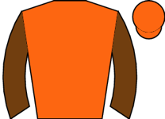 Charisma Cat ◆ 2 ▼ cls | 2.62 | - | 2-2-1-2-1-6 | trk✓ | 132 ↑ | 80 | ★★★★☆ | Prominent, led before 3 out, headed after 2 out, jumped left last, faded final 110yds | ||
| 4 | 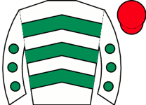 Good To Be Alive ◆ 1 M2 ▼ cls | 3.75 | - | 5-2-2-1-2-- | trip✓ trk✓ | 133 ↑ | 72 | ★★★☆☆ | Held up in mid-division, headway before 3 out, no extra next, pulled up before last | ||
| 1 |  Brookside La ◆ 3 ★ EYE ▲ cls Brookside La ◆ 3 ★ EYE ▲ cls | 5.00 | - | 5-4-1-3-3-1 | 2r | trip✓ trk✓ | 119 ↑ | 75 | ★★★★★ | Travelled strongly, held up in rear, headway 6th, ridden and in touch with leaders 3 out, | |
| 3 | 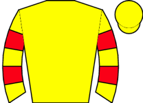 Static | 7.50 | - | 9-1-1-11-5-2 | 1r 1W | going✓ trip✓ trk✓ | 122 ↑ | 75 | ★★★☆☆ | Led, mistake 5th, joined after 3 out, ridden along and faced sustained challenge from 2 ou | |
| 0 | 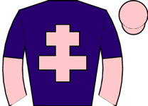 The Cistercian ▲ cls | 8.00 | - | 1-3---3---2 | trk✓ | 124 ↓ | 64 | ★★★★☆ | Midfield, not fluent and lost ground 1st, headway 5th, closed on leaders 3 out, ridden aft |
| Res | Horse | Price | BSP | Dr | Form | Crse | Suit | OR | Spd | TF | Last comment |
|---|---|---|---|---|---|---|---|---|---|---|---|
| 3 |  Jeriko Du Reponet ◆ 2 Jeriko Du Reponet ◆ 2 | 2.10 | - | 2-2-5-12---2 | going✓ trip✓ trk✓ | 138 ↓ | 82 | ★★★★☆ | Chased winner throughout, closed 3 out, shaken up before last, no impression | ||
| 2 | 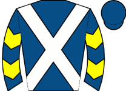 Stride On ◆ 1 M2 ▼ cls | 2.75 | - | 3-1-2-4-1-2 | 4r 1W | going✓ trk✓ | 127 | 70 | ★★★★★ | Prominent, chased leaders 2nd, outpaced when mistake 3 out, went third 2 out, stayed on to | |
| 1 |  Welonlyhavedone ◆ 3 Welonlyhavedone ◆ 3 | 4.33 | - | ----3-----3 | trk✓ | 130 | 61 | ★★★☆☆ | Held up in third, closed when not fluent 3 out, weakened before last |
⚠ limited form — likely skip
| Res | Horse | Price | BSP | Dr | Form | Crse | Suit | OR | Spd | TF | Last comment |
|---|---|---|---|---|---|---|---|---|---|---|---|
| 2 |  Attin ◆ 1 ★ EYE ▲ cls Attin ◆ 1 ★ EYE ▲ cls | 1.80 | - | 1 | 104 | Just worse than mid-division, smooth headway on outer 4f out disputing second, led going w | |||||
| 1 |  Jet Of Stars ⚠ ground Jet Of Stars ⚠ ground | 3.00 | - | 1-10 | 1r 1W | trip✓ trk✓ | 48 | Took keen hold, prominent, stumbled and weakened quickly before 2 out | |||
| 5 | Moon Reign ★ EYE | 6.00 | - | 4-5-6-7-1 | going✓ trip✓ | 51 | ★★★★☆ | Took keen hold, held up in midfield, dropped to last before 3 out, headway 2 out, soon swi | |||
| 3 | Malinas Party ◆ 3 | 17.00 | - | unraced | - | ||||||
| 4 |  Cool Off ◆ 2 Cool Off ◆ 2 | 26.00 | - | unraced | - | ||||||
| 8 | 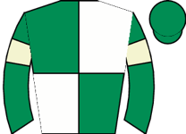 Effortless ⚠ ground | 51.00 | - | 8 | 49 | Midfield, asked for effort 2f out, soon held | |||||
| 6 |  Saint Cunning Saint Cunning | 67.00 | - | 5-5 | 40 | Mid-division, not fluent 6th, weakened after 3 out | |||||
| 7 | 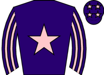 Zebra Star ⚠ ground | 101.00 | - | 4-9-9-9-6-9 | 3r | 59 | ★☆☆☆☆ | Held up in rear early, always behind and never a factor | |||
| 9 |  Bracing Brook Bracing Brook | 201.00 | - | ----- | 1r | 56 | ★☆☆☆☆ | Held up in rear of mid-division, not fluent 1st, struggling 6th, lost touch after 7th, pul | |||
| 10 | 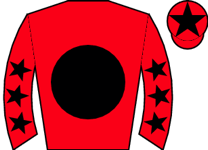 Bondi Road | 201.00 | - | - | 40 | Took keen hold, always behind, not fluent 7th, pulled up before 2 out |
| Res | Horse | Price | BSP | Dr | Form | Crse | Suit | OR | Spd | TF | Last comment |
|---|---|---|---|---|---|---|---|---|---|---|---|
| 0 | 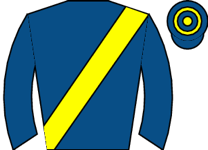 Athair Mor ◆ 1 | 3.50 | - | 6-2-2-2-2-3 | going✓ trip✓ trk✓ | 93 | 73 | ★★★★☆ | |||
| 1 | Rickety Gate M2 | 4.33 | - | 3-4---7-7-4 | 1r | 82 ↓ | 59 | ★★★☆☆ | Soon raced in second, pushed along and lost position 2 out, ridden before last, kept on | ||
| 3 | Jack Dempsey | 5.00 | - | --9-5---9-2 | 2r | trip✓ trk✓ | 86 ↓ | 50 | ★★★★★ | Held up towards rear, headway from 3 out, chased leaders from 2 out, strayed on and took s | |
| 4 | Beat The Retreat ⚠ ground | 5.50 | - | 1-10-1-4---3 | 1r 1W | trip✓ trk✓ | 88 | 49 | ★★★★☆ | Chased leader, not fluent 7th or 3 out, challenged 2 out, third and no extra inside final | |
| 6 |  Largy Meadow ◆ 2 ▼ cls Largy Meadow ◆ 2 ▼ cls | 9.00 | - | 6---2---2-9 | 2r | going✓ | 96 | 51 | ★★★☆☆ | Wore red hood to post, handy, pushed along and weakened before 2 out | |
| 2 |  Kinbara Firstdraft ◆ 3 Kinbara Firstdraft ◆ 3 | 15.00 | - | 6-9-5-2---5 | trk✓ | 93 ↓ | 76 | ★★★☆☆ | In rear, some headway from 2 out, no impression | ||
| 8 | Gone With The Tide ⚠ ground | 21.00 | - | 4-------9-- | 1r | 69 ↓ | 59 | ★☆☆☆☆ | Held up in rear, not fluent 11th, lost touch before 4 out, tailed off when pulled up befor | ||
| 9 | Brewdog ⚠ ground ▼ cls | 26.00 | - | 8-8-9-6 | 1r | 67 | 41 | ★★☆☆☆ | Slow 1st and in rear, reminders 6th and tailed off | ||
| 7 |  Dreamings Free Dreamings Free | 34.00 | - | 2-3-8-12-9-7 | going✓ trk✓ | 69 | 80 | ★★☆☆☆ | Rear mid-division, headway 9th, disputed third 13th, lost position 2 out, soon beaten | ||
| 5 |  Boston Queen Boston Queen | 67.00 | - | 6-10-----6-- | 77 ↓ | 59 | ★☆☆☆☆ | Chased leaders, weakened after 3 out, pulled up after mistake 2 out | |||
| 10 |  Bray Dale ⚠ ground Bray Dale ⚠ ground | 67.00 | - | 5---8---5-10 | 5r | 70 | 49 | ★☆☆☆☆ | Always towards rear, never a factor, bad mistake 9th, pushed along when not fluent 3 out, |
| Res | Horse | Price | BSP | Dr | Form | Crse | Suit | OR | Spd | TF | Last comment |
|---|---|---|---|---|---|---|---|---|---|---|---|
| 1 |  Ballynoe Boy ◆ 1 ★ EYE Ballynoe Boy ◆ 1 ★ EYE | 3.25 | - | 3-7-4-1-1-1 | trip✓ trk✓ | 107 ↑ | 106 | ★★★☆☆ | Wore earplugs throughout race, briefly led early, soon raced in third, not fluent 5th and | ||
| 2 | Lets Mingle M2 ⚠ ground | 5.00 | - | 5-1-5-7-7-1 | trip✓ | 111 | 59 | ★★★☆☆ | Made all, pushed along 2 out and faced challenges, drifted right approaching last, ridden | ||
| 3 |  Tread Softly Now ◆ 2 ▼ cls Tread Softly Now ◆ 2 ▼ cls | 5.50 | - | 2-4-3-4-2-1 | 2r | going✓ trip✓ | 104 | 66 | ★★★☆☆ | Prominent, close on leaders before 3 out, led after 2 out, asserted before last, won going | |
| 8 | Jem In Em ◆ 3 ▼ cls | 6.00 | - | 8-4-2---2-3 | going✓ trk✓ | 105 ↑ | 75 | ★★☆☆☆ | Chased leaders out wide, ridden and went remote 3rd between last two, no chance with leadi | ||
| 5 | Allfor ▼ cls | 9.00 | - | 6-2-4 | 3r 1p | trk✓ | 109 | 63 | ★★★★☆ | Led but pestered, not fluent and headed briefly 8th, headed before 3 out where not fluent | |
| 0 |  Boston Jury ⚠ ground Boston Jury ⚠ ground | 9.00 | - | 8-7-6---7-2 | 101 ↓ | 69 | ★★★★★ | Tracked leaders, pushed along after 3 out, went second before 2 out, ridden and kept on ru | |||
| 6 | Pyramid Place ⚠ ground | 26.00 | - | 8---6-10---6 | 102 ↓ | 66 | ★☆☆☆☆ | In rear, pushed along after 4 out, no response and tailed off | |||
| 4 | The Jeweller's Pet ⚠ ground | 26.00 | - | 4---4-3-2-8 | 3r 2p | trip✓ trk✓ | 97 ↑ | 49 | ★★★★☆ | Held up towards rear, headway when not fluent 2 out, soon weakened | |
| 7 | Micks Jet ▲ cls | 26.00 | - | 3-3-3---11-- | 95 ↓ | 65 | ★☆☆☆☆ | Towards rear, pushed along and dropped to last 7th, tailed off after 3 out, pulled up 2 ou |
| Res | Horse | Price | BSP | Dr | Form | Crse | Suit | OR | Spd | TF | Last comment |
|---|---|---|---|---|---|---|---|---|---|---|---|
| 3 | Blakey Boy ◆ 3 | 3.25 | - | 2-2-1-1---4 | 2r 1W | going✓ trip✓ trk✓ | 111 ↑ | 51 | ★★★☆☆ | Held up in fourth, not fluent 3 out, outpaced and last after 2 out, went fourth again when | |
| 4 | Green Angel M2 ★ EYE | 4.00 | - | 4-4-3 | 2r 1p | trk✓ | 114 | 46 | ★★★☆☆ | Soon raced in second, lost one place 4th, outpaced after 3 out, rallied after last, kept o | |
| 6 |  No Regrets ◆ 2 No Regrets ◆ 2 | 4.50 | - | 4-8-1-2-3-4 | going✓ trip✓ trk✓ | 107 | 68 | ★★★★☆ | Tracked leaders, second at 15th, pushed along and close up entering straight, ridden in th | ||
| 5 | If Not For Dylan ◆ 1 ▼ cls | 7.50 | - | 4-3-1-7-3-5 | going✓ trip✓ | 115 | 66 | ★★★☆☆ | Led, mistake 16th, pressed for lead 2 out, ridden after last, headed and weakened home ben | ||
| 2 |  Bridge Court Bridge Court | 8.50 | - | 2-2-5-1-4-6 | going✓ trip✓ | 104 ↑ | 67 | ★★★★★ | Midfield, dropped to rear 4 out, ridden before 3 out, soon weakened | ||
| 1 | Whistle Stop Tour ⚠ ground ▼ cls | 11.00 | - | 2-5-3-5---12 | 2r 2p | trip✓ trk✓ | 121 | 63 | ★★★☆☆ | Never better than midfield, ridden and outpaced in rear before 10th |
⚠ limited form — likely skip
| Res | Horse | Price | BSP | Dr | Form | Crse | Suit | OR | Spd | TF | Last comment |
|---|---|---|---|---|---|---|---|---|---|---|---|
| 1 | Double Annie ◆ 2 | 2.50 | - | unraced | - | ||||||
| 5 |  Pony Express ▲ cls Pony Express ▲ cls | 3.75 | - | 2-5 | trip✓ | 56 | Taken down early, reluctant to race and lost may lengths start, in rear and detached early | ||||
| 0 | Eillis | 4.33 | - | 4 | - | Mid-division on inner, took keen hold, 4th 4f out, pushed along and disputed lead 2 1/2f o | |||||
| 4 | Office Banter | 7.50 | - | 6 | 69 | Mid-division, pushed along well over 3f out, soon weakened | |||||
| 3 |  Kiki K ◆ 3 Kiki K ◆ 3 | 21.00 | - | unraced | - | ||||||
| 2 | Milano Lady ◆ 1 ⚠ hard trk | 26.00 | - | 3 | 66 | Towards rear, pushed along 3f out, soon dropped away | |||||
| 6 | Vienna Blue | 34.00 | - | unraced | - |
Decision support, not betting advice. Prices are forecast/early —
check the live market. Speed figures are final-time only (no sectionals), so weigh
them with your own read on how a race was run.